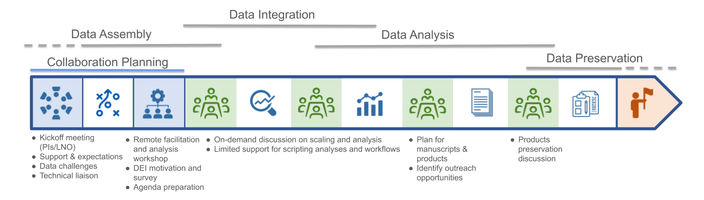
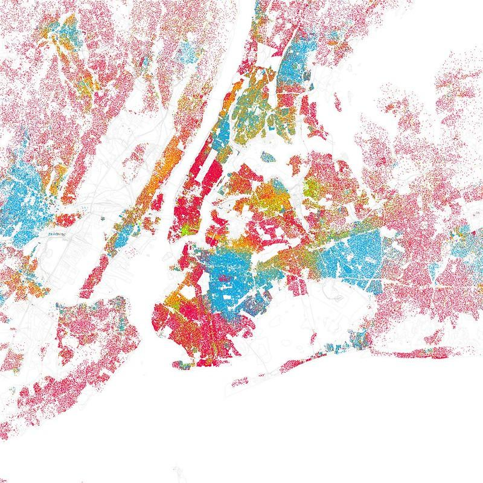
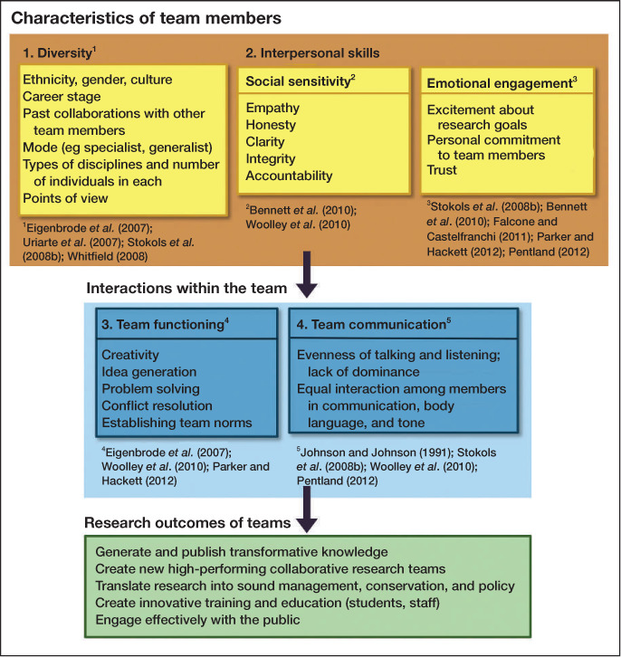
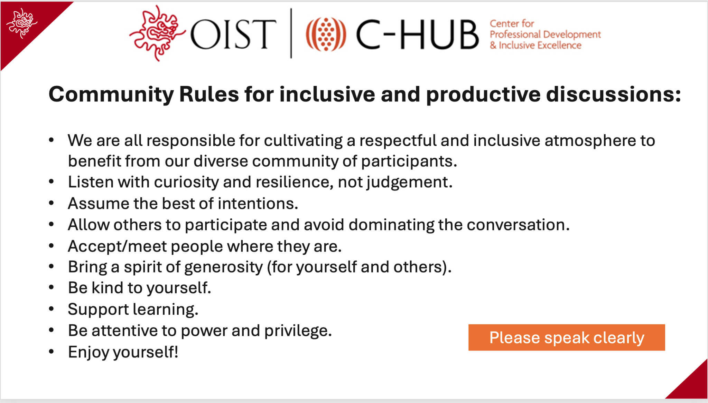
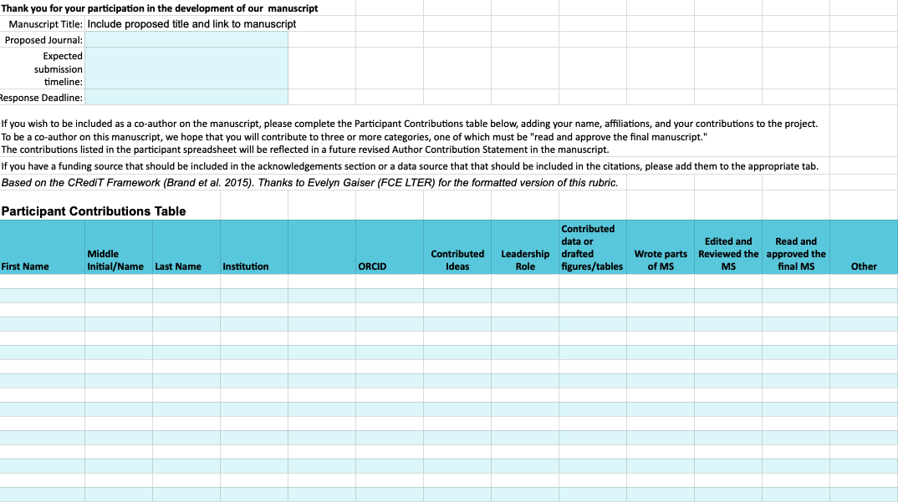

What Do We Mean by Synthesis?
Bringing together data from many sources to generate new scientific insights or test new hypotheses.
Today, we’ll focus on the particular flavor of synthesis that involves a team of people.
General Synthesis Process


From: Ten simple rules for ecological synthesis research (2026) Methods in Ecology and Evolution, in press
Why Synthesize?
- Higher impact products
- Incorporating (and learning) new skills
- Building your science community
- Leveraging the effort of the science community by re-using data
- Inclusion — a way to involve less research-intensive institutions and individuals who can’t/don’t want to do fieldwork
| Academic | Application |
|---|---|
 |
 |
| What benefits were most important to NCEAS working group participants? | Motivations for synthesis Hackett, E.J. (2020). Sustainability, reproduced from Reid et al. (2009) PNAS |
Funding and Resources
(Discussion prompt for participants — consider presenting as an interactive poll.)
Sources of Support for Synthesis
Synthesis Centers
- NCEAS
- ESIIL
- USGS Powell Center
- S-div
- Morpho Program
- Canadian Institute of Ecology and Evolution (CIEE)
Societies
- New Phytologist Workshops
- Gordon Research Conferences
- Chapman Conferences
- British Ecological Society (one-third of participants from the developing world)
NSF Programs
- ULTRA-Data DCL
- Core programs, e.g., DEB, IOS, MCB, Emerging Frontiers, OCE, OPP, RISE
- Search solicitations for “synthesis activities,” “synthesis projects”
- NSF workshops
Different Funders Emphasize Different Resources
| Funder | PI salary & direct project support | Direct analytical support | Postdoc funding | Facilitation & communication support |
|---|---|---|---|---|
| NSF | ✓ | |||
| ESIIL | ✓ | |||
| LTER | ✓ | |||
| NCEAS/Morpho | ✓ | |||
| Powell Center | ? | ? | ? | ? |
Everyone offers travel support, but different programs offer different kinds of additional support — remember to budget for the kinds of support that are allowed.
How to Get Involved in Synthesis
Build your community
- Let advisors and colleagues know
- Share your enthusiasm
- Ask questions at meetings
- Initiate conversations — in person, by email, or on social media
Build your skills
- Environmental Science Innovation and Inclusion Lab (ESIIL): Innovation Summit, hackathons
- LTER: Synthesis Skills for Early Career Researchers (SSECR)
- Data Carpentries
- NCEAS: Environmental Data Science Summit
Start Your Own!
What Makes a “Good” Question for Synthesis?
- Novel and interesting enough to spend 2–3 years deeply involved
- Ripe for synthesis
- Data already exist
- Large geographic area or temporal extent
- Data that aren’t normally collected/analyzed together
- Clearly framed, but flexible
- Results could include several kinds of products: papers of various kinds, symposia, datasets, analytical packages
- Responsive to the funding call!
What Kinds of Data Sources Might You Bring to Bear?
(Discussion prompt.)
Potential Data Sources
- DataONE
- LTER
- LTREB Projects
- NEON
- GenBank
- USGS
- GBIF
- NASA
- US Park Service
- FluxNet
- Phenocam network
- iNaturalist
- eBird
- Census data
- Data extracted from papers
- Scraping social media
- Text analysis


Data Use Principles
- Keep track of your data sources (sources, permissions, notes, related metadata, what’s included)
- Data sources should always be cited
- Communicate with data creators whenever possible
Sample outreach email:
Dear Dr. {last_name},
I am working on a synthesis of soil invertebrate diversity across North America and would like to include your dataset titled “{xxx}” (doi: {yyy}). We have downloaded the data from {zzz} repository, but wanted to let you know we are using it and to inquire whether there is any additional context we should be aware of or related datasets we should be sure to include. A short description of the synthesis project follows. Please let me know by {date} if you have any questions or concerns with our use of this data.
Thank you,
Authorship discussion prompts:
- Different models — inviting or not
- Authorship guidelines — interacting
- Is there other information that is relevant to this dataset?
- It may take work to get their data — how is that compensated?
Data Tracking for Each Included Dataset (Pre-Proposal)
| Field |
|---|
| URL to the data source |
| LTER Site / other location |
| Short data description |
| Data location (country, region) |
| Dates |
| Filename (as stored on the Google Drive) |
| URL to files (cloud drive, website, server; e.g., Google Drive link) |
| Date the data was last accessed/downloaded |
| Data creator/owner’s name |
| Data creator/owner’s email/contact |
| Working group participant who obtained the data (name) |
| Used in your analysis? (Y/N) |
Building a Team
Leadership Team & Main Group
The leadership team will affect who you can recruit to the larger group.
Look for:
- Different (and complementary) expertise
- Complementary professional networks
- Facilitation skills
- Emotional intelligence
Needs people who are/have:
- Conceptual skills
- Data skills
- Time and incentive to do the work
- Connected to prior work in the area
- Adjacent to the main project — but with new perspectives
- (Synthesis efforts are big career builders — use them as a chance to open doors for others)
- Able to help promote the work or connect to information consumers
Diversity Benefits Teams
Diversity (disciplinary, cultural, gender, cognitive) has many benefits to teams:
- More creative and innovative approaches
- Avoiding “groupthink”
- Better cognitive elaboration; more complex thinking
- Checks assumptions
- Diversity broadens group scanning ability and consideration of alternative solutions
- Diverse groups achieve better task completion and more efficient use of resources

References:
Horowitz, S.K. and Horwitz, I.B. (2007). The effects of team diversity on team outcomes: A meta-analytic review of team demography. Journal of Management, 33, 987–1015. https://doi.org/10.1177/0149206307308587
Aggarwal, I. & Woolley, A.W. (2018). Team creativity, cognition, and cognitive style diversity. Management Science, 65(4), 1586–1599. https://doi.org/10.1287/mnsc.2017.3001
Figure 2 from Cheruvelil, K.S. et al. (2014). Creating and maintaining high-performing collaborative research teams: the importance of diversity and interpersonal skills. https://doi.org/10.1890/130001
…But Those Benefits Are Not Guaranteed
Research in the science of team science demonstrates that they are achieved through:
- Cognitive elaboration — spelling out your assumptions and mental models
- Effective coordination — participants are able to contribute in the manner and at the times that they are best
- Learning goal orientation — openness to revising assumptions and world views
To build the safety and trust on which these depend:
- Spend time early to talk through various perspectives on the question that may be present in the group
- Articulate your coordination practices (Where will you keep data? How will you communicate? How often will you meet? What’s your authorship model? Do these work for slow and fast processors? Introverts and extroverts?)
- Pay attention to speaking time
- Be willing to look foolish — ask the “dumb” questions
- Spend social time together — meals, activities
References:
Pieterse, A.N. et al. (2013). Cultural diversity and team performance: The role of team member goal orientation. Academy of Management Journal. https://doi.org/10.5465/amj.2010.0992
van Knippenberg, D. and Hoever, I.J. (2017). Team diversity and team creativity: A categorization-elaboration perspective. https://doi.org/10.1093/oso/9780190222093.003.0003
Good Teams Are Both Chosen and Made
Diversity uncovers novel approaches, perspectives, and insights — AND can slow the pace, reveal assumptions, cause misunderstandings.
- Create a shared vision for your group (What behaviors and outcomes do you want? What do you want to avoid? Who are you as a group, culturally?)
- Value and accommodate various styles of contribution (fast and slow thinkers; visual, auditory, and kinesthetic learners; allow for synchronous and asynchronous contribution)
- Normalize discussion of systemic/structural oppression and racism and highlight ways of working to counter our own implicit biases
- Good check-in exercise: Start, Stop, Continue — what activities should we start doing, stop doing, or continue doing?
“No jerks” is a good start, but not enough.
Setting Expectations
- Code of conduct: expected behavior; multiple reporting pathways
- Group norms: co-development matters; authorship policy
- Work plan: establish early and communicate changes; set clear expectations for attention, contribution, and communication
- Get to know each other: icebreakers; invest in “social” time
Discussing Group Norms
Establishing Group Norms Can Be Simple
- Group values
- Inclusion
- Creative thinking
- Teamwork
- Accountability
- Fun
- What else?
From an NSF-funded Biodiversity on a Changing Planet working group (PI: Peter Adler)
…Or More Involved

From the Response Diversity Network workshop hosted by OIST (contributed by Sam Ross, Owen Petchey)
Group Behaviors
| Group-oriented | Dimension | Self-oriented |
|---|---|---|
| Including: invites others to participate and even at times mediates conflicts; promotes group cohesion and collaboration | Harmony | Dominating: takes much of the time to express and focus on their own views; tries to take control by use of power and time; excludes others |
| Clarifying: makes issues clear for the group by asking relevant questions, listening, and summarizing discussions | Questions | Discounting: disregards or minimizes group or individual ideas; interrogates others; severe behavior might involve microaggressions |
| Reminding/inspiring: reminds group of original targets, enlivens group through challenging steps, and even inspires new directions as appropriate | Focus | Digressing: rambles, takes a lot of space, and takes the group away from primary purpose without considering other people’s expectations |
| Cooperating: is interested in the views and perspectives of the other group members and is willing to adapt for the good of the group | Collaboration | Blocking/hindering: impedes group progress by obstructing most ideas and suggestions (“That will never work because…”) |
| Sharing: is willing to risk being courageous and vulnerable appropriately for the group or activity success | Risk | Withdrawing: removes self from discussions or decision making; distracted by other work, e.g., email or texts |
| Process-checking: reminds and questions the group on process issues such as agenda, time frames, topics, methods, etc. | Pace | Rushing: encourages the group to move on before tasks are complete; gets “tired” of listening to others and working as a group |
| Sharing lessons: communicates salient lessons without revealing private details | Sharing afterward | Sharing personal info: reveals confidential and vulnerable details to others |
Reflection
- Which group-oriented behavior comes most naturally to you?
- Which self-oriented behavior do you find creeping in most often?
- What are some strategies to maximize group-oriented and minimize self-oriented behaviors?
One Approach

Contact information: https://lternet.edu/synthesis-resources/
Project Management
- Identify what activities need greater lead time and broader involvement
- Tracking progress towards goals means identifying goals
- Identify who does what and where things go
- Encourage ownership of subprojects
- Single source of truth
- Choose a communication/information-sharing tool
- Lots of options, but the “best” is the one that will be used by this team
- Share a quickstart guide for those who aren’t familiar